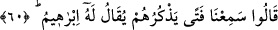
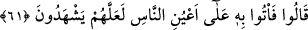

yaptı?” Bu işi bizim ilahlarımıza kim yaptı ve onları paramparça etti? dediler.
Bu soru, reddetmek ve kınamak içindir. Mübâlağalı bir şekilde kötülemek için putları
önlerinde olduğu halde “bunlara” demediler, “ilahlarımıza” dediler.
“Muhakkak o zâlimlerden biridir.” Çünkü o kendisini helâke mâruz bırakmıştır
“dediler.” Yâni kendi nefsine zulmedenlerdendir. Çünkü böyle bir iş yapmakla kendini
helâk uçurumuna atmıştır.
60. (Bir kısmı:) “Bunları diline dolayan bir genç duyduk; kendisine İbrahim
denilirmiş.” dediler.
Âyetin söyleyenlerin bir topluluk olduğuna delâlet ettiği aralarından bazıları: “Bunu
ilahlarımıza kim yaptı?” diye soranlara: “Başka insanlardan “bunları diline dolayan”
kötü bir şekilde putları anan ve onları ayıplayan “bir genç duyduk;” herhalde putları o
bu hâle getirmiştir.
Durum zâten delâlet ettiğinden Hz. İbrahim’in putları anması/diline dolaması mutlak
olarak ifâde edilmiş ve “kötü” sıfatı ile kayıtlanmamıştır. Çünkü İbrahim (a.s.)’ın
hoşlanmadığı ve nefret ettiği putları anması, ancak yermek olacaktır. Bunun benzeri bir
kimseye: “Filancanın seni andığını işittim.” demendir. Eğer anan kişi dost ise
bahsetmesi övgüdür. Düşman ise yergidir.
“Kendisine İbrahim denilirmiş,” yâni ona bu isim verilirmiş “dediler.”
61. “O halde, onu hemen insanların gözü önüne getirin. Belki şahitlik ederler.”
dediler.
“Bunu ilahlarımıza kim yaptı?” diye soranlar veya Şeyhzâde’nin dediğine göre
putların kırıldığı haberi zâlim Nemrûd ile putperest kavminin ileri gelenlerine ulaşınca
onlar kendi aralarında: “O halde, onu hemen insanların gözü önüne getirin.” İnsanlar
tarafından açıkça görülecek bir yere, binek üzerinde olanın aşağıdakini rahatça görmesi
gibi insanların gözleriyle görecekleri şekilde getirin. “Belki” onun yaptığına veya bunu
söylediğine “şahitlik ederler.” Böylece biz de onu, delilsiz olarak cezalandırmamış
oluruz. “dediler.”
Burada kâfirlerden bazılarının âdil şahidler olmadıkça suçlular aleyhine hüküm
vermediklerine işâret edilmiştir. Şu halde aleyhinde kesin delil olmayan bir zanlı
aleyhine hüküm veren hâkimin durumu, kâfirlerden ve Nemrud’un kavminden daha